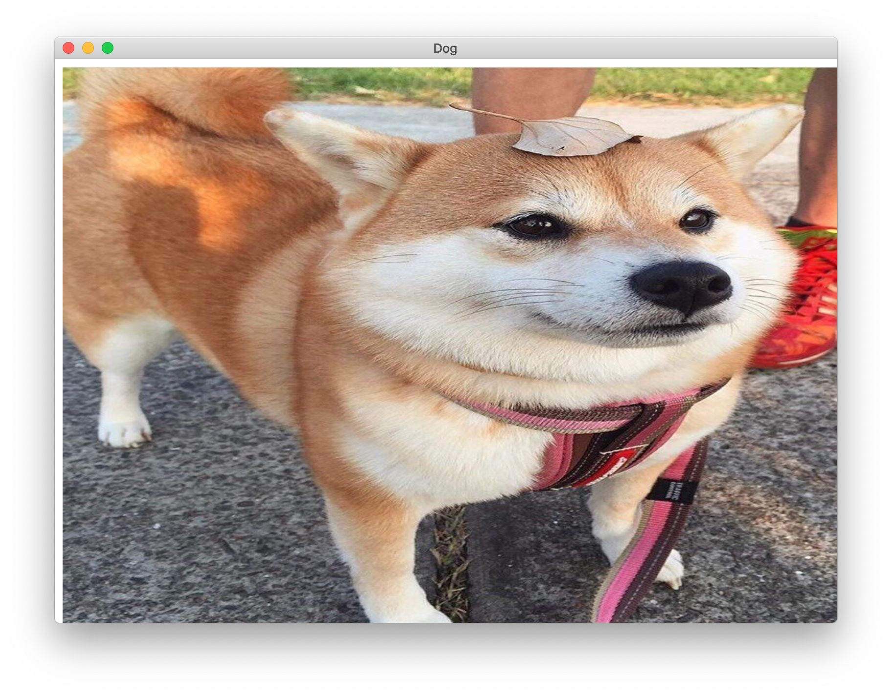
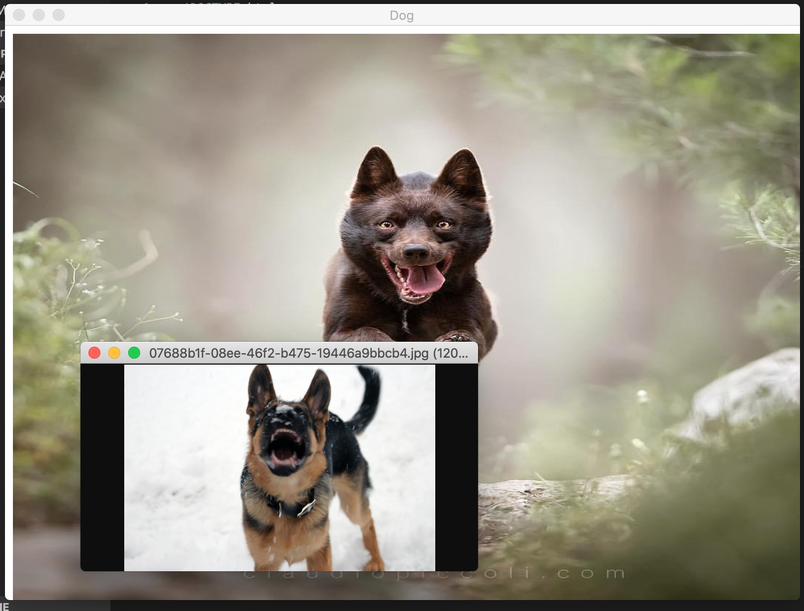

YOU WANT MORE DOG IMAGES IN YOUR DALEY LIFE?
if so, download DogApp, the cool new random dog image generator.
here's some screen shots


still not convinced, in the Dogs tab, you can view ALL of the imgs genarated, and drag them onto your desktop.
click the link below to download
Click to download
once you download, unzip the .zip file and you have DogApp
but thare's still one more step. open up system preferences, click Security & Privacy
open General and click the open anyway button
a new alert will pop up. and click the open anyway option
DogApp will now open!
to open DogApp agan, just click the DogApp icon in your Downloads folder
also move DogApp to a safer place then you Downloads folder like the Applacations folder
this is still in beta and it will be Open Sourced soon.
you can open the web version of this app by clicking the link below
Open Web App